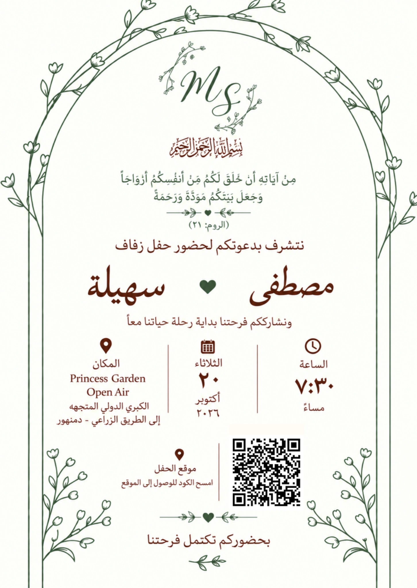
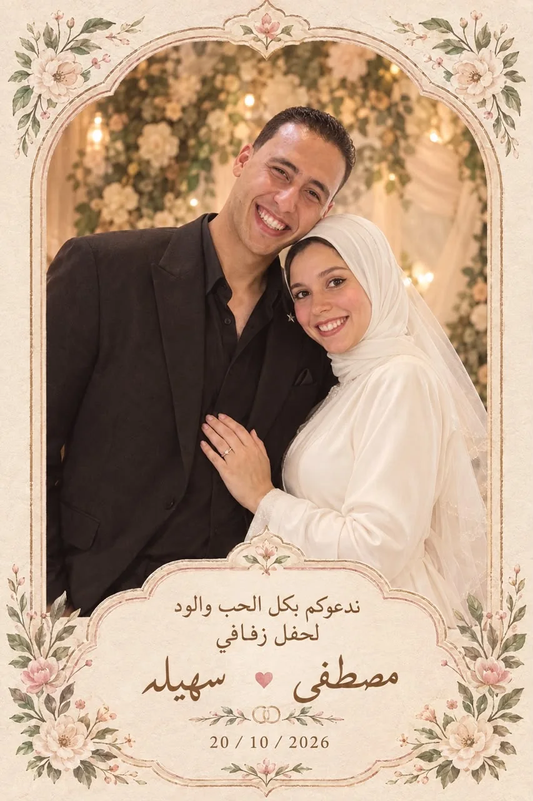

Let's start the journey
›
Open the Invitation
›

Tap to continue

Tap to continue
Save the date
Until forever
20 · 10 · 2026
0
Days
0
Hours
0
Minutes
0
Seconds
❦
Tap to continue
Location
Princess Garden
Open Air
Get Directions
Your presence will complete our joy
Tap to continue
It's with
great love...
♡
Sohaila & Mostafa · 20 October 2026
Tap to start again
‹
1 / 7
›
♪